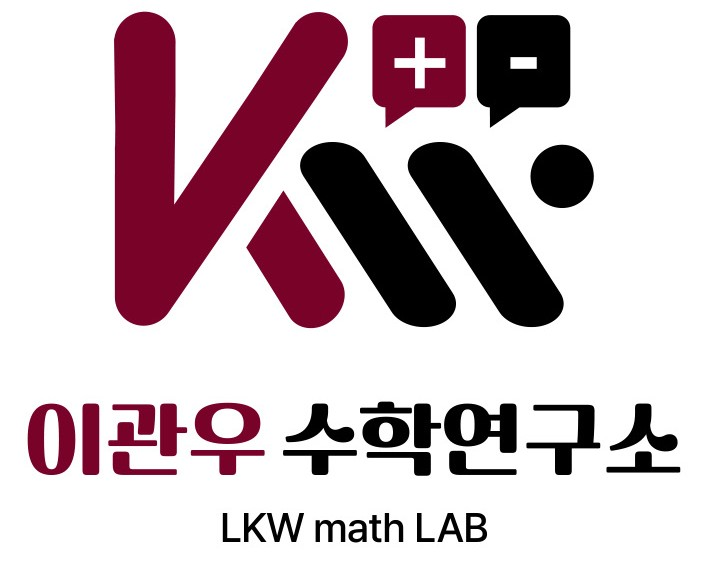

수학이 어렵다고 느껴지는 것은 생소하기 때문입니다.
반복적인 학습은 생소함을 익숙함으로 바꾸어주고
익숙함은 곧 자신감과 성적향상으로 이어지게 됩니다.
결국, 수학은 경험하고 반복하는 것이 중요합니다.

LKW math LAB · 수학 전문 강사
이관우 수학연구소는 수학 성적이 오르지 않는 이유를 철저하게 분석하여 개인별 솔루션을 제공합니다.
소수 정예반이 아닌 온전한 1:1 수업으로 '한 타임에 오직 한 명'만 집중케어합니다.
"이관우 수학연구소"에서는 학생의 수준에 맞는 맞춤형 학습 프로그램을 제공하여 공부 효율을 극대화 시켜줍니다.
"4단계 학습 시스템"이란, 한 과목을 개념, 유형, 응용, 심화 과정을 거쳐 총 4번 회독하면서 다른 과목을 동시에 학습하는 프로그램으로 수학을 넓은 시야에서 관통할 수 있어 '개념들의 단권화'를 만들어내는 학습 방법입니다.
| 개념 | 유형 | 응용 | 심화 | |
|---|---|---|---|---|
| 1회독 | 수학 (상) | |||
| 2회독 | 수학 (하) | 수학 (상) | ||
| 3회독 | 수학 1 | 수학 (하) | 수학 (상) | |
| 4회독 | 수학 2 | 수학 1 | 수학 (하) | 수학 (상) |
*학생별 맞춤 솔루션을 제공하기 때문에 과정은 학생별로 상이할 수 있습니다.
직접 강의를 확인해보세요. 이관우 선생님의 수업 방식을 미리 경험할 수 있습니다.
이관우 선생님과 함께 성장한 학생들의 이야기를 들어보세요.
궁금한 점이 있으시면 언제든지 문의해 주세요. 빠르게 답변 드리겠습니다.
지금 바로 문의주시면 수준 진단 상담을 먼저 진행해드립니다. 학생에게 맞는 솔루션을 함께 찾아드릴게요.